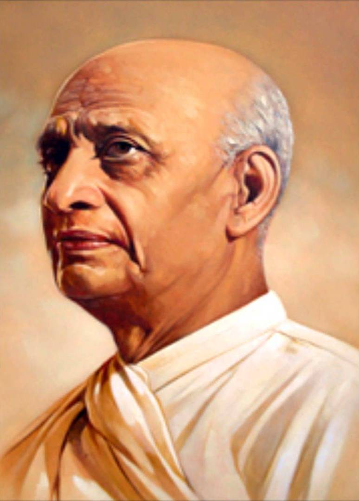

SARDAR VALLABHBHAI PATEL

- 1875: Born
- 1893: Married
- 1897: Passed matriculation exam in Nadiad.
- 1902: Shifted legal practice to Borsad, made a name as a criminal lawyer.
- 1910: Vallabhbhai leaves for England, admitted to Middle Temple
- 1917: Elected councilor of Ahmedabad Municipality; Chairman, Sanitary and Public Works Committee
- 1917: First direct contact with Mahatma Gandhi
- 1921: Elected Chairman, Reception Committee, Indian National Congress, 36th session, Ahmedabad; First Chairman, Gujarat Regional Congress Committee
- 1923: Elected President of Ahmedabad Municipality
- 1923: Given the title "SARDAR"
- 1931: Presides over Indian National Congress, 46th session, Karachi
- 1931: Joins Gandhi in talks with Viceroy Lord Irwin in Simla
- 1947: Government of India decides to establish a Department of (Princely) States under Sardar Patel
- 1947: Sardar joins Independent India's Cabinet as Deputy Prime Minister and Minister for Home, States, Information and Broadcasting
- 1949: Served as Acting Prime Minister of India during Nehru's visit to the U.S., UK, and Canada from Oct. 7- Nov. 15,1949
- 1950: Death
- 1991: Bharat Ratna
This is a link to his Wikipedia page